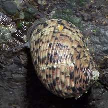
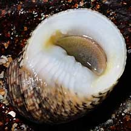
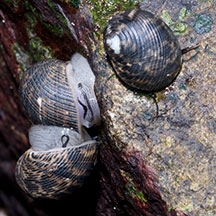
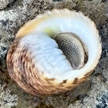

|
|
| shelled snails text index | photo index |
| Phylum Mollusca > Class Gastropoda > Family Neritidae |
| Waved
nerite snail Nerita undata Family Neritidae updated Sep 2020 Where seen? This snail is commonly seen on many of our Southern rocky shores and artificial seawalls. The study by Tan & Clements (2008) found this snail in crevices and under rocks of breakwaters and rocky shores of middle to upper intertidal zones. They note that the snails are nocturnal, emerging from their hiding places at dusk. Sites included: Pulau Ubin, Changi, Marina South, Sentosa, St. John's Island, Pulau Hantu, Pulau Salu, Tuas, Labrador, Raffles Lighthouse. Features: 2-4cm. Shell thick heavy, hemispheical, the spire sticks out. Narrow, spiralling ribs, smooth and regularly spaced. Shell patterns and colour variable, sometimes all black. The flat underside white sometimes yellowish especially at the sides of the shell opening. Some have ridges, wrinkles and a few small rounded bumps. Square notched 'teeth' (3-5) on the straight edge at the shell opening, the uppermost one is squarish. One distinctly large 'tooth' on one side of the shell opening. Operculum thick, evenly covered in tiny bumps, pinkish with darkish portion. Body pale with fine black bands on the foot and tentacles long thin black. Sometimes confused with other similar nerites. Here's a comparison of these similar nerite snails and how to tell them apart. |
 Sisters Island, Jul 06 |
 Sisters Island, May 08 |
 Sentosa, Nov 10 |
| Human uses: Where it is common, it is often collected for food and shellcraft by coastal dwellers. |
| Waved nerite snails on Singapore shores |
On wildsingapore
flickr
|
| Other sightings on Singapore shores |
 Sentosa Tg Rimau, Jan 26 Photo shared by Lon Voon Ong on facebook. |
Links
|